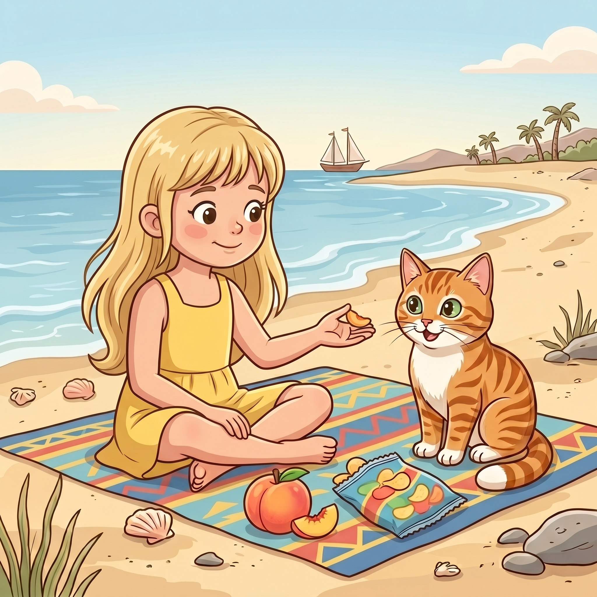

Step 1 · Say the Sound Team
ch
c and h say /ch/, like lunch.
🥪lunch
🏖️beach
🍑peach
Read ch words. Then read one tiny story.

c and h say /ch/, like lunch.
Beach Cat sat on the beach.
The girl had lunch.
She had chips.
She had a peach.
“Such a lunch,” said Cat.
The girl gave Cat a bit.
It was not much.
But it was enough.
You read ch words like lunch, much, such, and beach.
That sound team can come at the end of a word, too.
If it still feels fun, read your favorite ch story again.